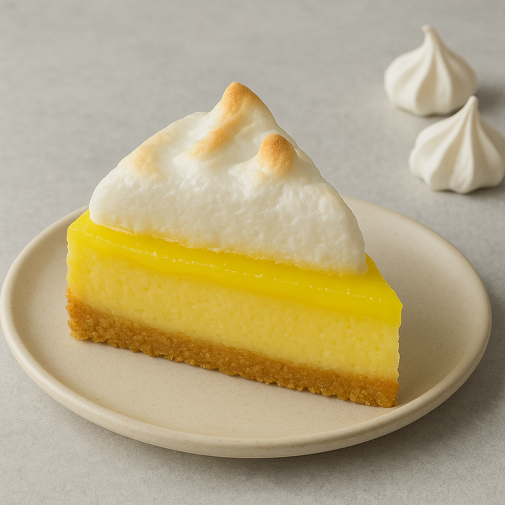

Home
Lemon Meringue Cheesecake

This lemon meringue cheesecake combines two classic desserts - lemon meringue pie and creamy cheesecake! Perfect for any occasion, it's sure to wow your guests. Like most cheesecakes, the flavor is even better after sitting overnight.
Crust
- 2 cups crushed shortbread cookies
- ¼ cup butter, melted
Filling
- 3 (8 ounce) packages softened cream cheese
- 1 cup sour cream
- 1 cup granulated sugar
- 4 large eggs
- ¼ cup freshly squeezed lemon juice
- zest of 1 medium lemon
- 1 teaspoon vanilla extract
Meringue Topping
- 4 large egg whites
- ¼ cup granulated sugar
- ¼ teaspoon cream of tartar (Optional)
- 1 ½ cups lemon curd
Steps
- Prepare all ingredients. Heat the oven to 325 degrees F (165 degrees C).
- For the crust: Combine cookie crumbs with melted butter in a bowl until well blended.
- Press the mixture firmly into the base of a 9-inch springform pan.
- For the filling: Using an electric mixer, beat the cream cheese, sour cream, and sugar in a bowl until the mixture is smooth and creamy.
- ncorporate eggs one at a time, mixing thoroughly after each. Blend in lemon juice, lemon zest, and vanilla until smooth, scraping down the bowl as necessary.
- Pour the filling over the prepared crust in the pan.
- Bake in the preheated oven until the edges puff up and the surface is set with only a small wobbly spot remaining in the center when gently shaken, approximately 1 hour.
- Allow to cool at room temperature for about 1 hour, then chill in the refrigerator until fully cold, at least 3 to 4 hours.
- For the meringue topping: Heat the oven to 375 degrees F (190 degrees C). Whip egg whites with an electric mixer until soft peaks appear.
- Add sugar and cream of tartar, continuing to beat until the mixture becomes glossy with stiff peaks.
- Spread the lemon curd evenly over the chilled cheesecake.
- Pile the whipped egg whites on top and spread to completely cover the curd layer.
- Bake in the preheated oven until the meringue turns golden brown, approximately 10 minutes.
- Take out of the oven and refrigerate uncovered for at least 1 hour or up to 1 day before serving. Avoid covering the meringue as it may deflate.